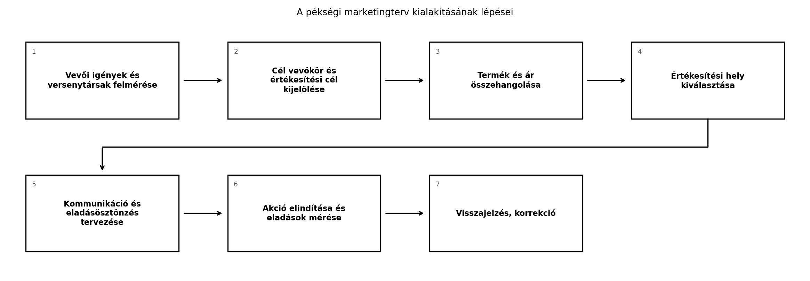
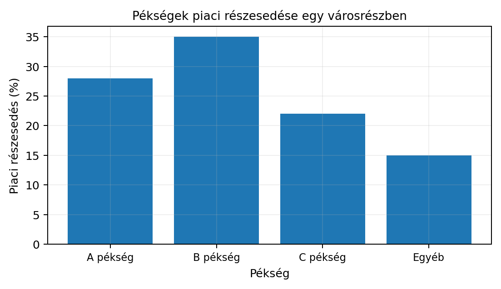

Egy pékségben a pék hajnali háromkor jó lisztből, gondosan vezetett kovásszal ízes kenyeret süt. A bolt mégis fél órával nyitás után is csendes. A szemközti üzletben gyengébb a kifli, de folyamatosan állnak a vevők, mert ott kóstoltatnak, hűségpontot adnak, és az eladó minden vevőnek elmondja, mit ajánl a friss pékáruból. A pékség tehát nemcsak sütőüzem, hanem piac is: a terméket el kell juttatni a vevőhöz, a vevőt meg kell szólítani, és a döntéseket adatokra kell alapozni. Ez a fejezet ezt a piaci és marketingmunkát tanítja meg.
A pékségi marketing nem reklámok halmaza, hanem egyetlen összefüggő folyamat: előbb megismerjük a vevőket, majd összehangoljuk a terméket, az árat, az értékesítési helyet és a kommunikációt, végül mérjük az eredményt.

A piaci részesedés szemléltetésére is érdemes egy egyszerű oszlopábrát nézni. A számok tanulási példák, nem mért adatok.

Az ábra lényege: a saját pékség részesedését nem elég érezni, számolni kell. Ha az „A pékség” 28%-ot tudhat magáénak, akkor a növekedéshez vagy új vevőt kell szereznie, vagy a meglévő vevőket kell gyakrabban vásárlásra bírnia.
Definíció. A piac a kereslet és a kínálat találkozása: azoknak a vevőknek és eladóknak az összessége, akik egy adott termékcsoportban, például friss kenyérben, péksüteményben, cukrászati jellegű sütőipari termékben adnak-vesznek. A pékség szempontjából a piac nemcsak a saját bolt, hanem a környék összes vásárlója és az összes versenytárs is.
Definíció. A kereslet az a termékmennyiség, amelyet a vásárlók adott idő alatt, adott ár mellett meg akarnak és meg is tudnak vásárolni. A kínálat az a termékmennyiség, amelyet az eladók adott idő alatt, adott ár mellett kínálni tudnak és akarnak.
A pékségben a keresletet befolyásolja többek között a termék ára, a jövedelem, a fogyasztói szokások, az időjárás, a hét napja, a termék frissessége és a helyettesítő termékek ára. A kínálatot pedig a gyártási kapacitás, a nyersanyagkészlet, a munkaerő, a kemencék teljesítménye és az önköltség.
Definíció. A piaci verseny az eladók vetélkedése a vevőkért. A pékség versenyezhet a környék másik kézműves pékségével, a szupermarket pékáru-részlegével, sőt a mélyhűtött, otthon kisütött termékekkel is. A verseny eszköze lehet az ár, a minőség, a választék, a nyitva tartás, a kényelem, a csomagolás és a kiszolgálás.
Definíció. A piaci egyensúly az az ár-mennyiség állapot, ahol a vásárlók által keresett mennyiség és az eladók által kínált mennyiség megegyezik. Ha a pékség túl magas árat állapít meg, a kínálat meghaladhatja a keresletet, ezért megmarad a kenyér. Ha túl alacsonyat, az áru hamar elfogy, de a pék nem éri el a lehetséges bevételt.
Összefüggés. A piaci pozíció mérésére egyszerű viszonyszámot használunk:
A mennyiség lehet darab, kilogramm vagy nettó árbevétel. Egyetlen számításon belül azonban mindig ugyanazt az egységet kell használni.
Példa. Egy pékség egy hónapban 12 000 db kenyeret ad el. A városrészben ugyanebben a hónapban összesen 40 000 db kenyeret értékesítenek. A piaci részesedés:
∎
Definíció. A piackutatás olyan célzott információszerzés, amely a vevők, a versenytársak, a piaci környezet és a saját értékesítés megismerésére irányul. Célja, hogy a pékség ne érzésekre, hanem megfigyelhető adatokra alapozza a döntéseit.
A piackutatás két nagy csoportra bontható.
Figyelem. Ha a piackutatás személyes adatot gyűjt, például nevet, e-mail-címet, telefonszámot, akkor be kell tartani az adatvédelmi szabályokat. Anonim, azaz név nélküli kérdőívvel ez jórészt elkerülhető, de a pontos adatkezelési követelményt mindig ellenőrizni kell (ellenőrizendő: adatvédelmi előírás, GDPR).
Definíció. A piacbővítés a piac növelésére irányuló tudatos munka. A pékség új vevőket szerezhet, új terméket vezethet be, új értékesítési csatornát nyithat, vagy a meglévő vásárlókat ösztönözheti nagyobb vásárlásra.
Szabály. A piacbővítés lehetséges irányai: meglévő termék új vevőkörnek; új termék a meglévő vevőknek; új értékesítési hely vagy időpont; online előrendelés és házhozszállítás; csomagolt, hosszabb eltarthatóságú termék bevezetése. Mindegyik irány piackutatással kezdődik, és a marketingmix összehangolásával folytatódik.
Definíció. A marketingmix azoknak az eszközöknek az összehangolt döntéssorozata, amelyekkel a pékség a kiválasztott célpiac igényeire válaszol. A klasszikus felosztás négy elemet különböztet meg, gyakran 4P néven: termékpolitika (product), árpolitika (price), értékesítési csatorna (place) és piacbefolyásolás, kommunikáció (promotion).
A marketingmix akkor jó, ha a négy elem egymást erősíti. Hiába kiváló a termék, ha az ára nem versenyképes, rossz helyen kínáljuk, vagy senki sem tud róla.
Termékpolitika. A pék dönt a választékról, a tömegről, a formáról, a csomagolásról, a márkanévről, a frissesség megőrzéséről, az allergénjelölésről és a kapcsolódó szolgáltatásokról, például szeletelésről, előrendelésről. A marketingszempontú termék nemcsak maga a kenyér, hanem az a teljes előny, amit a vevő kap: reggeli frissesség, kényelem, megbízható allergéninformáció, ajándékozható csomagolás.
Árpolitika. Az árnak fedeznie kell az önköltséget, de figyelembe kell vennie a versenytársakat és a vevő értékérzetét is. Az ár eszköze lehet a kupon, a mennyiségi kedvezmény, a hűségpont, a bevezető ár és a leértékelés is. Az árcsökkentést azonban mindig végig kell számolni, mert a nagyobb forgalom nem mindig pótolja a kisebb fajlagos fedezetet.
Értékesítési csatorna. Azt jelenti, hogy a termék hol, mikor és milyen módon jut el a vevőhöz. Ilyen a saját bolti pult, az önkiszolgáló berendezés, a piaci árusítás, a viszonteladóknak történő szállítás, a webes előrendelés és a házhozszállítás. A csatorna kialakításánál döntő a vevő napi ritmusa: a reggeli ingázó a gyors kiszolgálást, a család a hétvégi előrendelést, a vendéglátó a megbízható reggeli szállítást értékeli.
Kommunikáció, piacbefolyásolás. Ide tartozik a reklám, az eladásösztönzés, a közönségkapcsolat és a személyes eladás. A cél nem a rábeszélés, hanem az, hogy a vevő megismerje a terméket, kipróbálja, és visszatérjen.
Példa. Egy családi pékség egyszerű marketingmixet készít a hétvégi foszlós kalácsra.
| Marketingmix-elem | Pékségi döntés | Indoklás |
|---|---|---|
| Termék | 500 g-os foszlós kalács, tejjel és tojással, átlátszó csomagolásban | hétvégi családi reggeli, jól látható állag |
| Ár | 950 Ft/db, törzsvásárlóknak 10% kedvezmény | prémium minőség, de elérhető ár |
| Értékesítési hely | saját bolt pultja, valamint pénteki online előrendelés | kényelmes, tervezhető vásárlás |
| Kommunikáció | bolti plakát, közösségi média bejegyzés, szombati kóstoló | a vevő lássa és próbálja meg |
∎
Definíció. A marketingkommunikáció minden olyan üzenet, amellyel a pékség tájékoztatja, emlékezteti vagy meggyőzi a vevőt. Lehet fizetett reklám, például helyi újsághirdetés, online hirdetés, de lehet saját felület is, például bolti tábla, árlap vagy közösségi média oldal.
Definíció. A közönségkapcsolat, más szóval public relations (PR) olyan nem közvetlenül eladásra irányuló kapcsolatépítés, amely a pékség jó hírét erősíti. Ilyen lehet a nyílt nap, a helyi rendezvényen való részvétel, az iskolai pékbemutató, a jótékonysági felajánlás vagy a saját szakmai történet bemutatása. A PR hosszú távon bizalmat épít.
Definíció. Az eladásösztönzés rövid távú, mérhető ár- vagy ajándékkedvezmény, amelynek célja a vásárlás haladéktalan kiváltása. Például reggel 7 és 8 óra között 10% kedvezmény a kifliből, „kenyér mellé féláron kakaós csiga”, hűségkártya, tizedik kifli ajándék, kóstolóval kísért bemutató.
A jó akció megtervezése mindig számokkal történik.
Számítás. Egy kifli normál nettó (ÁFA nélküli) eladási ára 80 Ft/db, a pékség közvetlen önköltsége 50 Ft/db (tanulási árszint). Normál napon 400 db-ot ad el. A fajlagos fedezet így:
A normál napi fedezet:
Az akciós nettó ár 70 Ft/db, ezért az akciós fajlagos fedezet:
Az a minimális akciós darabszám, amelynél a napi fedezet nem csökken:
Ha az akcióval a napi eladás 600 db alatt marad, az összfedezet csökken, hiába nő a forgalom. Érdemes tehát előre megbecsülni a többletkeresletet. ∎
A fedezetet mindig nettó (ÁFA nélküli) árból számoljuk, mert az ÁFA nem a pékség bevétele. Általánosan: a fedezetsemleges darabszám , ahol a közvetlen önköltség. Az alábbi görbe ezt mutatja az 5. feladat adataival (380 Ft-os nettó ár, 200 Ft-os önköltség, napi 500 db): ahogy az akciós ár közelít az önköltséghez (függőleges pontozott vonal), a szükséges darabszám minden határon túl nő.
A tanulság a négyzettel jelölt pontban látszik: a mintegy 16%-os árengedményhez 50%-kal több eladott darab kell, hogy a napi fedezet ne csökkenjen. A HTML-kiadásban a normál ár, az akciós ár, az önköltség és a normál darabszám csúszkával állítható (a fenti kidolgozott példa is betölthető), és élőben látszik a fajlagos és a napi fedezet, a szükséges darabszám és a százalékos növekmény.
Szabály. Az eladásösztönzésnél meg kell adni a kedvezmény mértékét, az akció időtartamát, a résztvevő termékek körét, a készlet nagyságát, a kommunikációs felületet és az utólagos mérést. Az akció nem lehet megtévesztő: a meghirdetett kedvezmény a megadott időszakban, a megadott termékkörre, a hirdetett feltételekkel érvényes (ha például „minden kifli 20%-kal olcsóbb”, akkor ez minden kiflire és a teljes meghirdetett időszakra igaz). Árcsökkentésnél a korábbi árként főszabály szerint az akciót megelőző 30 nap legalacsonyabb árát kell feltüntetni; gyorsan romló termékre kivétel lehet (ellenőrizendő: (EU) 2019/2161 irányelv, a termékek eladási árának feltüntetéséről szóló hazai rendelet, fogyasztóvédelmi hatóság tájékoztatója).
A vásárlói döntést befolyásolja a friss termék látványa, a sütőillat, a tiszta pult, a rendezett környezet, a jól olvasható ár- és allergéntájékoztatás, valamint az eladó szaktudása és kedvessége. Ezeket a hatásokat etikusan kell használni. Tilos a megtévesztő szűkösség látszatát kelteni, tilos valótlan „ma reggel sütött” állítást tenni, és tilos a terméket élettani hatásával indokolatlanul összekapcsolni.
Definíció. A személyes eladás az eladó és a vevő közötti közvetlen párbeszédre épülő értékesítés. A pékségben ez a pultnál, a kóstolónál vagy a telefonos megrendelésnél valósul meg.
A személyes eladás lépései:
Higiénia. A termékkóstoltatás is élelmiszer-kezelés. Az eladó csak tiszta ruhában, hajhálóban vagy megkötött hajjal, tiszta kézzel kínálhat. A kóstolókat letakart tálcán, csipesszel vagy eldobható kesztyűvel kell adagolni. A tálcát és a fogóeszközöket rendszeresen cserélni kell, a lehullott vagy megérintett mintát ki kell dobni.
Allergén. A kóstolónál is fel kell tüntetni az allergén összetevőket, mert a fogyasztói tájékoztatás nem csak a csomagolt terméken kötelező. Ha például a kalács tojást, tejet vagy diófélét tartalmaz, ezt a kóstoló mellett egyértelműen jelezni kell. A gluténmentes terméket külön tálcán, külön fogóval kell kezelni, hogy a lisztpor vagy a morzsa ne szennyezze keresztszennyezéssel.
Előírás. Az élelmiszerek reklámozása és a fogyasztói tájékoztatás nem lehet megtévesztő. Az élelmiszerrel kapcsolatos állításokra az uniós élelmiszerjog, köztük az 1169/2011/EU rendelet és a táplálkozási, egészségre vonatkozó állításokról szóló 1924/2006/EK rendelet, Magyarországon pedig a fogyasztóvédelmi törvény és a gazdasági reklámtevékenységről szóló törvény előírásai vonatkoznak (ellenőrizendő: pontos, hatályos rendeletszámok, törvények és a pékségre alkalmazandó hirdetési szabályok). A „friss”, a „kézműves” vagy az egészségre utaló kifejezést csak akkor szabad használni, ha az állítás a termékre igaz és jogszabályszerűen alátámasztható. Egészségre vonatkozó állítást, például „erősíti az immunrendszert”, pékáru esetében csak engedélyezett feltételekkel lehet tenni.
Egy kisebb városi pékség azt tapasztalta, hogy reggel 7 és 9 óra között erős a forgalom, délre azonban sok megmaradt zsemle és kifli. A tulajdonos megfigyelte, hogy a környéken több iroda működik, és az ott dolgozók 11 óra körül gyakran üres szendvicsalapot keresnek. A pék rövid kérdőívet helyezett a pultra, és megkérdezte a törzsvásárlókat, mit rendelnének előre.
A válaszokból kiderült, hogy a vevők teljes kiőrlésű zsemlét, magvas bagettet és jól csomagolt, egyenletes méretű szendvicskiflit szeretnének. A pékség ezután így alakította ki a marketingmixét: a termék teljes kiőrlésű zsemle és hosszabb eltarthatóságú magvas bagett lett; az ár az előrendelőknek 10% kedvezményt adott; az értékesítési csatorna webes előrendelés plusz bolti pult lett; a kommunikáció pedig irodai kóstolóval indult. A kóstolókat higiénikusan, allergéntájékoztatással készítették elő.
Az első hónapban a napi zsemleeladás tanulási példaként 150 db-bal nőtt, a megmaradt délutáni készlet csökkent. A példa tanulsága: a piacbővítés nem újabb sütéssel kezdődik, hanem vevői igény felismerésével, majd a 4P összehangolt megváltoztatásával.
A marketingterv akkor megfelelő, ha a cél világos, a 4P elemek összhangban vannak, és az eredmény mérhető. Ellenőrzendő jellemzők:
A leggyakoribb eltérés, hogy az akció sok vevőt hoz, de a fedezet a megnövekedett forgalom ellenére is csökken, mert a darabszám növekedése nem éri el a fedezetsemleges szintet. Ezért az akciót darabszámban, árbevételben és fajlagos fedezetben is értékelni kell.
1. feladat (A) Definiáld a piackutatást, és sorolj fel két elsődleges, valamint két másodlagos piackutatási módszert.
2. feladat (A) Egy pékség napi 1 200 db zsemlét ad el. A körzet napi teljes zsemlefogyasztása 4 800 db. Számítsd ki a piaci részesedést.
3. feladat (B) Készíts egyszerű marketingmix-táblázatot egy teljes kiőrlésű kenyérre. Add meg a termék, az ár, az értékesítési csatorna és a kommunikáció elemét egy-egy indoklással.
4. feladat (B) Tervezz eladásösztönző akciót a reggeli kifli eladásának növelésére. Add meg a terméket, a kedvezményt, az időtartamot, a kommunikációt és az utólagos mérés módját. Írd azt is, milyen készletadatot kérnél az árubeszerzéstől ahhoz, hogy az akció alatt ne fogyjon ki az áru.
5. feladat (C) Egy pékség 380 Ft-os nettó (ÁFA nélküli) árú péksüteményt 320 Ft-os nettó akciós áron kínál. A termék közvetlen önköltsége 200 Ft/db. Normál áron napi 500 db-ot adnak el. Hány darabot kell eladni az akciós áron ahhoz, hogy a napi fedezet ne csökkenjen?
6. feladat (D) Pékáru kóstolót szervezel a boltban. Írj négy konkrét higiéniai vagy allergénbiztonsági lépést, amelyet a kóstoló előkészítésekor elvégzel.
Önellenőrzés – válaszok
1. feladat megoldása. A piackutatás célzott információszerzés a vevőkről, a versenytársakról és a piaci környezetről. Elsődleges: bolti megfigyelés, vevői kérdőív, kóstoltatás, panaszok értékelése. Másodlagos: saját eladási napló, számlázóprogram kimutatása, helyi statisztika, online értékelések.
2. feladat megoldása.
Adott: saját napi eladás , teljes piaci mennyiség .
Keresett: piaci részesedés.
Ellenőrzés: az eredmény 0 és 100 közötti; a pékség a körzet egynegyedét szolgálja ki.
3. feladat megoldása. Például:
| Marketingmix-elem | Döntés | Indoklás |
|---|---|---|
| Termék | 750 g-os teljes kiőrlésű kenyér, szeletelhető, papírcsomagolásban | egészségtudatos vásárlóknak |
| Ár | 980 Ft/db, törzsvásárlóknak 5% kedvezmény | minőséghez igazodó, elérhető ár |
| Értékesítési csatorna | saját bolt, valamint heti kétszeri piaci árusítás | a célcsoport a lakóhelyén is eléri |
| Kommunikáció | bolti tábla, közösségi média, kóstoló | a vevő megismerje az ízt és az állagot |
4. feladat megoldása. Egy lehetséges akció: reggel 7 és 8 óra között a kifli 10% kedvezménnyel kapható. A cél a kora reggeli forgalom növelése. A kommunikáció: bolti tábla és közösségi média bejegyzés. Az utólagos mérés: az akciós órában eladott darab, a normál órák eladása, a megmaradt készlet és a napi fedezet. Az árubeszerzéstől a várható többletkereslet, például plusz 200 db kifli rendeléséhez szükséges liszt, élesztő és csomagolóanyag mennyiségét kérné, hogy az akció alatt a készlet folyamatos legyen.
5. feladat megoldása.
Normál fajlagos fedezet:
Normál napi fedezet:
Akciós fajlagos fedezet:
Fedezetsemleges akciós darabszám:
Tehát legalább 750 db-ot kell eladni, ami 250 db, azaz 50%-os mennyiségnövekedés.
6. feladat megoldása. Négy lehetséges lépés: tiszta munkaruha és kézmosás; a kóstolók letakart tálcán, csipesszel vagy eldobható kesztyűvel való adagolása; az allergének kiírása minden termék mellé; gluténmentes termék külön tálcán, külön fogóval való kezelése, hogy a morzsa ne szennyezze.
A piac a kereslet és a kínálat találkozása. A péknek ismernie kell a vevőit, a versenytársait és a saját piaci részesedését. A piackutatás elsődleges és másodlagos módszerekkel gyűjt adatokat; a piacbővítés új vevőt, új terméket, új csatornát vagy nagyobb vásárlási gyakoriságot jelent. A marketingmix négy eleme a termékpolitika, az árpolitika, az értékesítési csatorna és a piacbefolyásolás, azaz kommunikáció. A marketingkommunikáció része a reklám, a közönségkapcsolat, az eladásösztönzés és a személyes eladás. Az eladásösztönző akciót mindig fedezetszámítással kell előkészíteni, és darabszámban, árbevételben, valamint fedezetben mérni. A kóstolónál is be kell tartani az élelmiszer-higiéniai és allergéntájékoztatási szabályokat. A marketing állításai nem lehetnek megtévesztők, az egészségre vonatkozó állítások pedig csak engedélyezett feltételekkel tehetők.
Továbbvitt eredmény. A piackutatás becslése, a marketingmixben megállapított termék- és árjellemzők, valamint az akció várható forgalmi adatai közvetlenül beépülnek a(z) Kereskedelem, árubeszerzés, készletgazdálkodás és értékesítés alfejezetbe: ott a várható keresletből rendelési tervet, a termékválasztékból készletnormát, az akcióból pedig beszerzési csúcsot kell képezni.